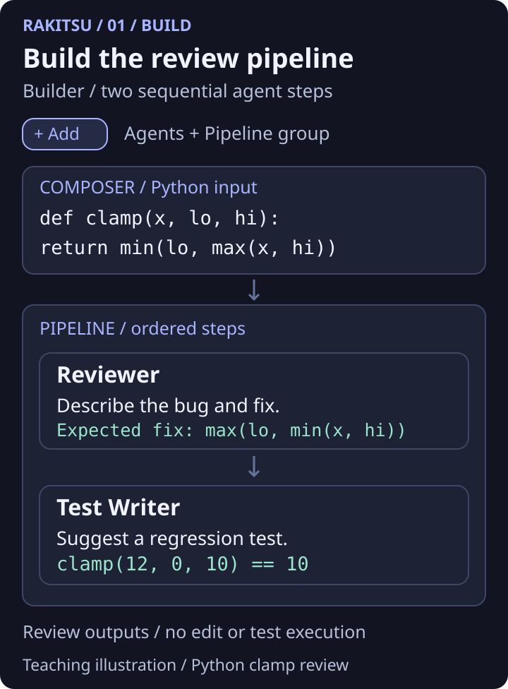
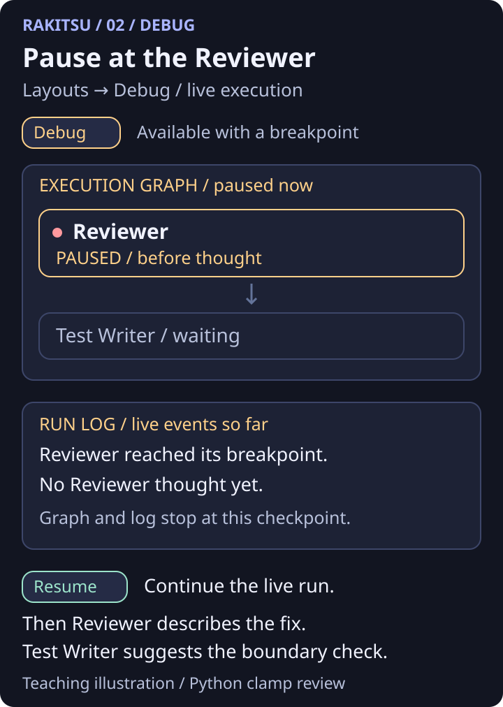
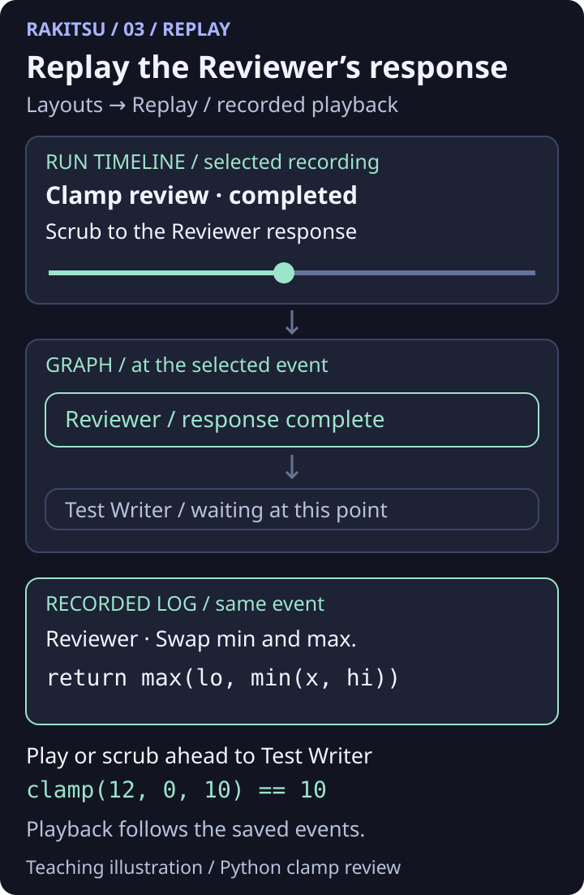

Rakitsu Web UI Manual
Overview
This manual describes the 0.4.0 development workspace.
The rakitsu web UI is a full-featured agent IDE accessed via rakitsu serve. The workspace has seven dockable panels:
- Builder — Visual drag-and-drop agent configuration
- Debugger — Real-time execution monitoring with breakpoints
- Inspector — Event stream viewer
- Sessions — Session history and inspection
- Chat — Interactive agent conversations
- Run Log — Events for the latest run, a selected session, or all received events
- Run Timeline — Playback and event details for a recorded run
Start the UI:
rakitsu serve --port 9100
# Open http://localhost:9100
First launch, nothing in the config list? serve only shows configs
found under ., ./examples, ./configs (or --config-dir), relative to
wherever you ran it from. If you don't have a project yet, run rakitsu quickstart first — or open examples/ and pick one to try the UI against
before writing your own config.
Workspace layouts
Use Layouts → Debug to put Builder beside the Debugger Block graph, with Run Log and Run Timeline below. The log follows the latest web run until you choose another source. Use Layouts → Replay to give the execution graph more space. Choose a recording in Run Timeline and use Play or the slider to move the graph and recorded log together. Switching presets keeps the selected recording and playback position. In narrow windows the panes stack.
Use a pane’s ⋯ menu to float, dock, maximize, or join another tab group. Drag a pane by its tab or floating title bar to snap it into place. In Builder, use the composer chevron to collapse the prompt controls and free canvas space. The prompt and run settings are kept when you expand it. Recent runs appear in the Builder footer.
Watch the 0.4.0 Web UI walkthrough. It shows a pipeline in Builder, a breakpoint in the Debug layout, and a recorded run in the Replay layout.
Example workflow for a Python code review
These teaching diagrams follow a two-agent review. The recordings show the workspace in use, including a separate Retrieval → Decision pipeline that runs without agents.
-
Build the two steps. In Settings, configure a provider and model. Use + Add to create an Orchestrator, a Pipeline group, and two agents named Reviewer and Test Writer. Connect the Orchestrator to the group. Drag both agents into the group and confirm Add to group. Place Reviewer above Test Writer so the pipeline runs them in that order. Ask Reviewer to describe the bug and fix, and Test Writer to suggest a regression test from the review. Enter this Python input in the Builder composer.
def clamp(x, lo, hi): return min(lo, max(x, hi))The
minandmaxcalls are reversed. The intended fix ismax(lo, min(x, hi)). The suggested test isclamp(12, 0, 10) == 10. The agents propose the fix and the test in their responses.
-
Debug the live run. On Reviewer, use the Builder context menu's Break before thought action. The composer offers Debug when a breakpoint is set. Choose Layouts → Debug, then start with Debug. At the breakpoint, inspect the paused Reviewer in the graph and the events received so far in Run Log. The Reviewer's thought has not run yet and Test Writer is waiting. Click Resume to continue the live execution. Let both steps finish so the completed recording is available for replay.

-
Replay the completed recording. Choose Layouts → Replay and select that completed run in Run Timeline. Scrub the slider to the Reviewer's completed response. The graph and recorded Run Log follow the same event, where Reviewer has described the fix and Test Writer is still waiting. Use Play or scrub forward to the Test Writer's suggested
clamp(12, 0, 10) == 10check. Playback moves the viewing position through the saved events.
Visual Builder
Use + Add to create nodes and groups. Hover over an icon to see its action. Use Tab to reach the choices in + Add, and Esc to close it and return focus to the button. The composer shows Run, or Debug when a breakpoint is set.
Choose SVG workbench preview in the toolbar to switch canvases. Classic canvas returns to the default view. Arrange lays out the SVG preview left to right. Use the fold control on a group, or Fold all and Unfold all in the toolbar.
Builder opens the Execution Path when a run starts. Use Show Workflow to see the configured graph while it runs. After a run, Back to Canvas restores editing and Show Results opens the execution graph again.
Canvas Basics
| Action | How |
|---|---|
| Pan canvas | Click and drag on empty space |
| Zoom | Scroll wheel or pinch |
| Fit view | Click the fit-view button in bottom-left controls |
| Add node | Open + Add and choose Agent, Tool, Skill, or Orchestrator |
| Move node | Click and drag a node |
| Connect nodes | Drag from a source handle to a target handle |
| Edit node | Click a node to open the side panel editor |
| Delete node | Select node(s), press Delete or Backspace |
| Right-click menu | Right-click any node for context actions |
Node Types
| Type | Purpose | Handles |
|---|---|---|
| Agent | LLM-powered worker or supervisor | In (top), Out to tools/skills (bottom) |
| Tool | CLI command, filesystem operation, MCP server call, or A2A delegation | In (top) |
| Skill | Reusable tool+prompt combination | In (top) |
| Orchestrator | Manages agent coordination strategy | In (top), Out to agents (bottom) |
| Group | Container block for grouping nodes | In (top), Out (bottom) |
| Decision | Asks typed questions and can route to agent steps | Branch wires come from the Decision configuration |
| Retrieval | Searches a local document corpus and returns cited passages | An evidence wire connects to a Decision configured to use the results |
Select a pipeline group to enable Decision and Retrieval in + Add.
Open the Decision editor to set its backend, questions and routes.
Set the corpus directory in the Retrieval editor and start rakitsu serve
with RAKITSU_RETRIEVAL_ROOT pointing at the approved corpus. See the
pipeline reference
for the evidence input rules.
Connection Rules
| Source | Valid Targets |
|---|---|
| Orchestrator | Agent, Orchestrator, Group |
| Agent | Tool, Skill, Agent, Orchestrator, Group |
| Group | Agent, Tool, Skill, Orchestrator, Group |
| Tool | (leaf node — no outgoing connections) |
| Skill | (leaf node — no outgoing connections) |
Multi-Select
| Action | How |
|---|---|
| Box select | Shift + drag on empty canvas |
| Toggle node | Cmd + click (Mac) / Ctrl + click (Win) |
| Select all same level | Shift+drag covers all nodes at current scope |
| Deselect all | Click empty canvas or press Escape |
Bulk Operations
When multiple nodes are selected, a Bulk Edit panel appears:
- Shows count and types of selected nodes
- If all same type (e.g., all agents): edit shared fields (provider, model)
- Duplicate — clones all selected nodes + internal edges
- Delete — removes all selected with confirmation
Block Programming (Groups)
Creating Groups
| Method | How |
|---|---|
| Empty group | Open + Add and choose Pipeline, Parallel, Team, Loop, or Group |
| Group selection | Select two or more nodes, then use the Group selection icon |
| Right-click menu | Multi-select → right-click → "Group as Pipeline/Parallel/Team" |
Group Types
| Type | Color | Execution Meaning |
|---|---|---|
| Pipeline | Blue | Children execute sequentially (top to bottom) |
| Parallel | Green | Children execute concurrently |
| Team | Pink | Children managed by orchestrator (hierarchical) |
| Generic | Gray | Visual grouping only — no execution semantics |
Adding Nodes to Groups
| Method | How |
|---|---|
| Drag and drop | Drag a node over a group → release → overlay menu "Add to group" |
| Nested groups | Drag a node over a nested group → deepest matching group is targeted |
| Re-parent | Drag a node from one group to another → moves between groups |
During drag, the target group highlights with a blue glow to show where the node will land.
Removing Nodes from Groups
| Method | How |
|---|---|
| Ungroup all | Select group → click Ungroup or right-click → Ungroup |
| Drag out | (Enter group scope first, then drag node outside) |
Group Properties
- Resizable — select a group, drag the corner/edge handles
- Minimum size — 250 x 120 pixels
- Connectable — groups have input/output handles for edges
Scope-Based Selection
Selection follows a hierarchical scope model (like Maya/Figma):
Scope Navigation
The scope widget appears at the top center of the canvas:
[ Canvas ] | Enter: [ Pipeline ] [ Team ] ← at root
[ Canvas ] / [ Pipeline ] [ ↑ Up ] ← inside Pipeline
[ Canvas ] / [ Pipeline ] / [ Parallel ] [ ↑ Up ] ← nested
| Action | How |
|---|---|
| Enter a group | Double-click the group, or click its name in the scope widget |
| Exit group | Press Escape, or click ↑ Up, or click a parent in the scope path |
| Jump to root | Click Canvas in the scope widget |
Selection Rules
- Same-level only — you can only select nodes at the current scope level
- Parent overrides children — if a group is selected, its members can't be individually selected
- Selecting a group deselects its descendants — cleans up conflicting selections
- Groups are selectable — groups at the current scope level can be part of multi-select
- Mixed selection — groups + regular nodes can be selected together at the same level
Settings Panel
Open with the gear icon in the toolbar.
Service Providers
Define LLM providers before configuring agents:
- Click + Add Service Provider
- Set Name (e.g., "my-openai", "litellm-proxy")
- Set Type (openai, anthropic, gemini, ollama, litellm)
- Set Default Model — auto-discovers from proxy if base_url is set
- Set API Key and Base URL as needed
Defaults
- Default Provider — dropdown shows only defined providers
- Default Model — auto-discovers from the default provider
- Temperature, Max Tokens — propagated to agents via inherit/override
Inherit/Override System
All auto-filled values follow an inherit/override pattern:
| Badge | Meaning |
|---|---|
| inherited (blue) | Value syncs with its source (e.g., provider's default model) |
| reset button | Click to go back to inherited from a manual override |
Inheritable fields:
model← provider's default_modeltemperature← settings.defaults.temperaturemax_tokens← settings.defaults.max_tokensmax_iterations← settings.execution.max_iterationstimeout← settings.execution.timeout_seconds
Changing the source (e.g., provider default model) automatically updates all agents with inherited values. Manually overridden values are never touched.
Referential Integrity
All entities have internal stable IDs (_id). References survive renames:
| Rename | Auto-updates |
|---|---|
| Provider renamed | All agent/orchestrator provider fields |
| Tool renamed | All agent tools[], all skill tools[] |
| Skill renamed | All agent skills[] |
| Agent renamed | Orchestrator agents[], pipeline step agent refs |
IDs are stripped on YAML export — clean output with no internal metadata.
Node Editor
Click any node to open the side panel editor.
Agent Fields
| Field | Description |
|---|---|
| Name | Agent identifier (used in YAML + references) |
| Role | worker or supervisor |
| Provider | Select from defined providers |
| Model | Auto-discovers from provider, or type custom |
| System Prompt | Agent instructions (multi-line text) |
| Tools | Chip multi-select from canvas tools + custom input |
| Skills | Chip multi-select from canvas skills |
| Vision | Enable image input support |
| Model Config | Temperature, max tokens, top P, penalties |
| Agent Settings | Max iterations, timeout, reflection, ground check |
ComboBox Dropdowns
All dropdowns use a custom ComboBox component:
- Click to open dropdown with all options
- Type to filter (incremental subsequence matching)
- Toggle A/F button to switch between "show All" and "Filter" mode
- Custom values accepted (type and press Enter)
Debugger
Modes
| Mode | Description |
|---|---|
| Run | Execute agent, stream events (no debug overhead) |
| Debug | Attach debugger with breakpoints, pause/resume, param override |
Session Panel (right side)
- Live tab — active and recent runs
- History tab — past sessions from the JSONL session store
- Search — incremental chip-based filter (name, query, agent, status, config path)
- Delete — single or bulk delete with confirmation
- Resizable — drag left edge to resize
Visualization Styles
Switch using the Tree and Block buttons or open the other graph styles:
| Style | Best For |
|---|---|
| Tree | Hierarchical view, compact, most detail |
| Block | Execution cards and the visual path through the run |
| Timeline | Time-based horizontal view |
| Mind Map | Organic radial layout |
Breakpoints
Set breakpoints to pause execution at specific points:
| Method | How |
|---|---|
| Breakpoint bar | Select event type + agent name in the toolbar |
| Tree context menu | Right-click a node → "Set Breakpoint" |
| Inline buttons | Select a tree node → click BP button |
| Builder context menu | Right-click agent node → "Break before thought/tool/agent" |
Supported checkpoints:
AGENT_START, THOUGHT_START, THOUGHT_END, TOOL_CALL_START, REFLECTION_START, GROUND_CHECK_START, PIPELINE_STEP_START
While Paused
| Action | Description |
|---|---|
| Resume | Continue execution normally |
| Step | Advance to next checkpoint |
| Step In | Enter the next sub-agent |
| Step Out | Resume until leaving current agent |
| Run to Here | Resume until reaching a specific node |
| Stop | Cancel execution |
Paused Node Indicators
| Visual | Meaning |
|---|---|
| Orange pulsing background | Node is paused |
| ⏸ icon + "PAUSED" badge | Paused at this node |
| Red dot in gutter | Breakpoint set on this agent |
| Green background + spinner | Currently executing |
| Live status line | Shows what agent is doing (streaming text, tool call, etc.) |
Debug Experimentation
While paused, override parameters in the Detail Panel:
- System Prompt — modify the agent's instructions
- Max Iterations — change iteration limit
- Tools — enable/disable specific tools
- Sticky toggle — override persists across resumes or applies once
Debug from History
| Action | Where | What it does |
|---|---|---|
| Run to Here | Tree node (live debug) | Resumes until reaching that node |
| Debug from Here | Tree node (history) | Re-runs session in debug mode, pauses at that node |
| Rerun | Session panel | Re-launches a past session |
| Inspect in Builder | Session panel | Loads session config into the visual builder |
Import / Export
Import
| Format | How |
|---|---|
| Single YAML | Import → Import YAML |
| Modular directory | Import → Import Directory |
| Scaffold template | Scaffold, then choose a preset |
Export
| Format | How |
|---|---|
| Single YAML | Export → Export YAML |
| Modular ZIP | Export → Export Modular (ZIP) |
Internal fields (_id, _providerId, _inherited) are automatically stripped on export.
Pipeline Import
When importing a config with orchestrator.strategy: Pipeline:
- Pipeline steps become Pipeline group blocks
- Parallel steps become nested Parallel group blocks
- Agents are placed inside their respective groups
Environment Variables
Set env vars for agent execution in the Run dialog:
- Add key-value pairs in the Environment section
- Variables are scoped to the execution only (not set on the server process)
- Use
${VAR_NAME}syntax in YAML configs to reference them
Keyboard Shortcuts
| Key | Action |
|---|---|
| Delete / Backspace | Delete selected nodes |
| Escape | Exit group scope / deselect all |
| Shift + drag | Box select multiple nodes |
| Cmd + click | Toggle node in multi-selection |
| Double-click group | Enter group scope |
| Cmd + Enter | Run (in run dialog) |
Workspace Directory
Set the working directory for tool execution:
- Builder run dialog — workspace field with orange warning if empty
- RunLauncher (session panel) — same field
- Tools execute relative to this directory
- Persists across runs in the session
Tips
- Use scaffold templates to get started quickly
- Define providers in Settings first, then agents will auto-populate model lists
- Set default_model on each provider — new agents inherit it automatically
- Use Pipeline/Parallel groups to visualize execution order
- Double-click groups to edit children inside
- The inherit system keeps settings in sync — use "reset" to go back to defaults
- Right-click any node for quick actions (breakpoints, duplicate, delete, group)